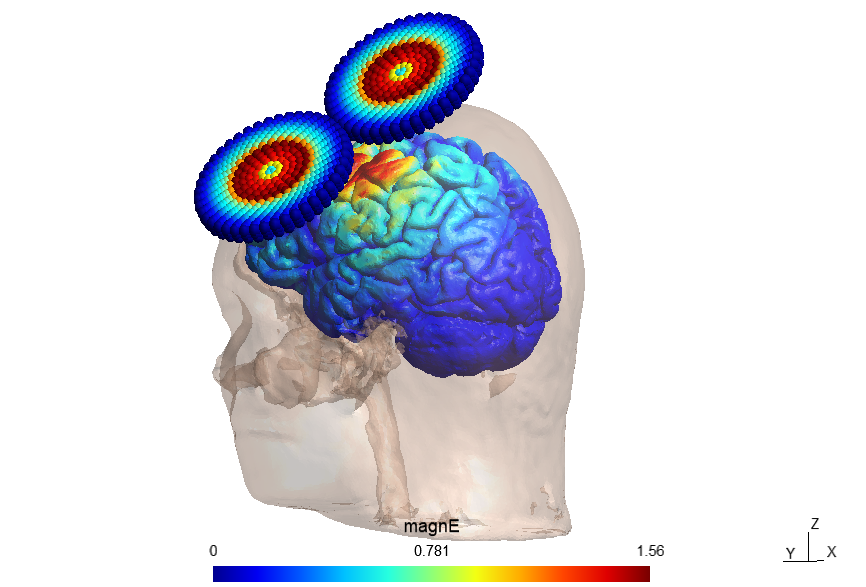
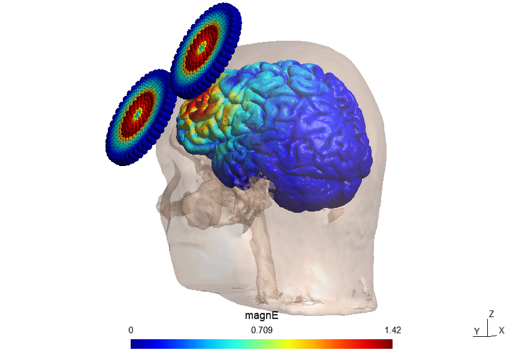
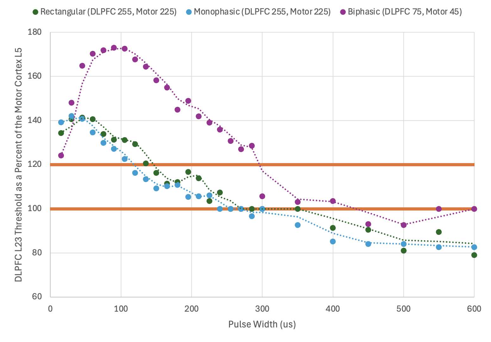
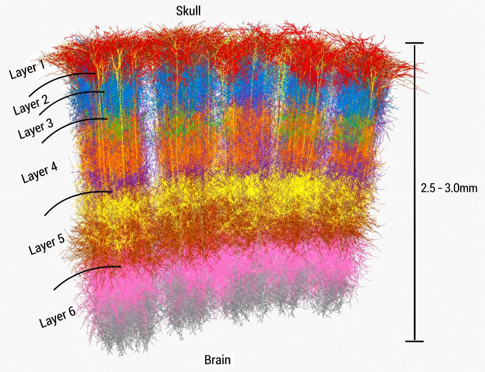

WHY THESE THREE?
Motor Evoked Responses and Depression Treatment Target
In clinical TMS, the motor cortex is useful because stimulation can produce a visible or measurable muscle response. That response can be used to estimate a patient's motor threshold. Depression treatment, however, is commonly delivered to the left DLPFC, where there is no equally simple outward signal that tells us exactly when the targeted neurons have reached threshold.
The sgACC adds a third piece to the story. It is a deeper region involved in depression related networks and has become important in research on how DLPFC stimulation sites are selected. Together, these three regions help connect the clinical process of TMS with the neuronal simulations in this project.
MODELED TARGETS
The Same Coil Interacts Differently With Each Cortical Target
The motor cortex and DLPFC occupy different parts of the cortical surface. Their geometry changes the field produced at the target, which is one reason the neuronal threshold cannot be assumed to transfer between regions using one fixed ratio.


DLPFC · LEFT HEMISPHERE
Dorsolateral Prefrontal Cortex
What does it do?
The DLPFC is part of the prefrontal cortex and contributes to executive functions such as working memory, attention, planning, decision making, cognitive control, and the regulation of behavior and emotion.
Rather than acting alone, it communicates with distributed cortical and subcortical networks involved in cognition, motivation, and emotional processing.
What is its role in depression?
Major depressive disorder has been associated with altered activity and connectivity within prefrontal and limbic networks that include the DLPFC. These changes are relevant to symptoms such as impaired cognitive control, difficulty shifting attention away from negative information, and disrupted regulation of mood.
Depression is heterogeneous, so the DLPFC should not be thought of as a single “depression center.” Its importance comes from its position within a larger network of regions whose interactions can differ across individuals.
What is its role in TMS?
The left DLPFC is one of the best established cortical targets for rTMS treatment of major depressive disorder. High frequency rTMS and intermittent theta burst stimulation are commonly delivered over this region in depression treatment protocols.
Stimulation of the DLPFC may influence not only local cortical neurons but also connected brain networks, including pathways involving the sgACC. This network level effect is one reason that the exact choice of DLPFC stimulation site remains an active area of research.
Why is it important to our project?
The DLPFC is our primary treatment region model. We simulate how its neurons respond as stimulation parameters change, including coil orientation, pulse width, waveform, and neuronal morphology.
The larger goal is to determine whether DLPFC specific stimulation behavior can help identify settings that reach neuronal activation with less required stimulator output.
M1 · PRIMARY MOTOR CORTEX
Primary Motor Cortex
What does it do?
The primary motor cortex is a major cortical region for the control of voluntary movement. Different portions of M1 are associated with movement of different parts of the body, and its output contributes to descending motor pathways that ultimately influence skeletal muscle activity.
What is its role in depression?
M1 is not the main therapeutic target for depression, but motor system physiology can still be altered in major depressive disorder. TMS studies have reported differences in measures of motor cortical inhibition, facilitation, and plasticity in people with depression.
Depression can also include psychomotor symptoms such as slowed movement, although these symptoms arise from distributed brain networks rather than from M1 alone.
What is its role in TMS?
M1 gives TMS something extremely useful: an observable output. When the appropriate motor region is stimulated strongly enough, a motor evoked potential can be recorded from a muscle or a visible movement can occur.
This makes it possible to determine a motor threshold, which is widely used to calibrate stimulation intensity for an individual. Many depression protocols then set prefrontal stimulation as a percentage of that motor threshold.
Why is it important to our project?
M1 is our reference region. We can simulate the same types of neurons and stimulation parameters in M1 and the DLPFC, then compare how much stimulation each model requires to reach firing threshold.
This comparison lets us ask whether a relationship measured at the motor cortex should automatically be assumed to translate to the DLPFC.
sgACC · DEEPER MOOD RELATED NETWORK
Subgenual Anterior Cingulate Cortex
What does it do?
The sgACC is located beneath the genu of the corpus callosum within the ventromedial cingulate region. It participates in networks involved in mood, emotional processing, autonomic regulation, reward, and the integration of internal emotional states with behavior.
What is its role in depression?
The sgACC has been repeatedly implicated in major depressive disorder. Studies have reported structural, activity, and connectivity differences involving this region, although the direction and size of those differences are not identical across every study or every patient.
Its importance is therefore best understood as part of a distributed depression related network rather than as a single region that independently causes depressive symptoms.
What is its role in TMS?
Conventional DLPFC TMS does not normally stimulate the sgACC directly because the sgACC lies deeper in the brain. Instead, researchers study whether stimulating a superficial cortical region can influence connected deeper networks.
A particularly important finding is that DLPFC sites with stronger negative functional connectivity to the sgACC have often been associated with better antidepressant response. This relationship has helped motivate connectivity guided approaches to selecting DLPFC targets.
Why is it important to our project?
Our neuronal simulations focus mainly on the cortical regions where the TMS electric field is applied, especially the DLPFC and M1. The sgACC helps explain why DLPFC targeting matters at the network level.
It connects our local question: how efficiently can DLPFC neurons be stimulated, to the larger depression circuitry that motivates targeting the DLPFC in the first place?

DATA BACKED CONCLUSION
Does 120% of Motor Threshold Describe the DLPFC?
No. In our simulations, the DLPFC L2/3 firing requirement is not described by a fixed 120% relationship to Motor Cortex L5. The relationship changes with pulse width and pulse shape. Under some tested conditions the DLPFC required more induced electric field than the motor cortex, while under other conditions it required less.

The DLPFC induced E field threshold fell below 120% of M1 at 135 µs, below the M1 threshold at 255 µs, and reached 77.9% of the M1 threshold at 600 µs.
The DLPFC induced E field threshold fell below 120% of M1 at 120 µs, below the M1 threshold at 240 µs, and reached a minimum of 81.6% of the M1 threshold.
The DLPFC induced E field threshold fell below 120% of M1 at 300 µs, below the M1 threshold at 450 µs, and reached a minimum of 91.4% of the M1 threshold.
Across the tested pulse widths and pulse shapes, the DLPFC L2/3 to Motor Cortex L5 induced E field threshold ratio ranged from 77.9% to 170.7%. A single 120% ratio therefore does not describe the modeled neuronal threshold relationship between these regions. Motor threshold remains a useful clinical reference, but our results show that the stimulation required by DLPFC L2/3 neurons depends strongly on the stimulation parameters being used.
For each pulse shape, the DLPFC L2/3 and Motor Cortex L5 pulse width sweeps use the coil orientation that produced the lowest firing threshold for that model. The induced E field threshold is calculated from the firing threshold in dI/dt multiplied by the corresponding EROI value.
A BRIDGE TO THE NEXT TAB
What about cortical layers?
The cerebral cortex is organized into layers containing different populations of neurons. In this project, two especially important models are layer 2/3 pyramidal neurons and layer 5 pyramidal neurons. Their dendrites, axons, locations, and connections are different, so they do not necessarily respond to the same TMS electric field in the same way.
Continue to Neuron Morphology →